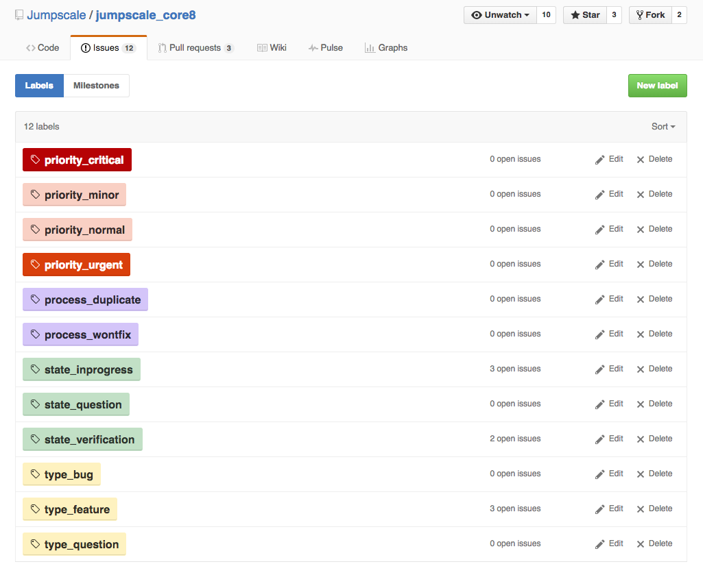
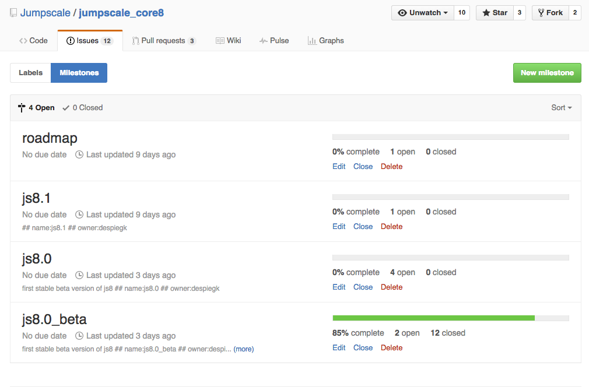

Planning (#TODO: *1 document needs review, not ok)
NOTOK
Introduction
Planning always happens in an organization repository, such as:
- org_development (engineering)
- org_support
- org_quality
- org_internalit
- org_marketing
- org_product
- org_finance
- org_legal
- org_hr
Remember that organization repositories should only be created in GitHub organizations of type "projorg" such as gig-projects.
Also in case of planning related to product development, the planning should only happen in an organization repository, even while the actual code exists in a code repository, which can only exist in GitHub organizations of type "codedorg" such as jumpscale.
So in other words, for all product development there will always be two repositories:
- One code repository in a "codedorg" organization where the actual code exists
- One organization repository in a "projorg" organization where the planning happens
As a consequence you will have two "types" of milestones involved:
- A non-time based milestone in the code repository - here we typically use a release number such as "8.1"
- A time based milestone in the organization repository - here we use specific names like
nov_end
In what follows we discuss the steps for planning related to product development.
Step 0: Prepare
- Per company there is a GitHub organization of type "projorg", e.g. gig-projects
- Here you will have an organization repository, e.g. gig-projects/org_development
Per group of products there is GitHub organization of type "codedorg", e.g. jumpscale
- Here you will have/create one or more code repositories, e.g. Jumpscale/jumpscale_core8
- Make sure all your code repositories are well prepared, having the right labels and milestone:


- Use our tools to set the labels, ...
- Make sure all people have access
Step 1: Roadmap / strategic planning
In the home repository of the "projorg" organization
- Update README.md (
$homerepo/Readme.md)- Link to all documents mentioned below
- Create terminology document (
$homerepo/terminology.md)- Define all relevant terms related to your products
- Create components document (
$homerepo/components.md)- Define the components which make up the products
- Describe what all these components do
- Include links to the associated code repositories
- Update README.md (
In org_development or org_research of the "projorg" organization
- Define roles
- Define milestones (time based!)
- Explain why the milestones
- Define owners of the milestones
In proj_... of the "projorg" organization
- Define owner (only 1 role = project owner)
- Define milestones (time based!)
- Explain why the milestones
- Define team
Telegram group (optional)
- Create telegram group with same name as repo prepended with short company name e.g. gig_org_development
- Make sure right people have access to it
- All relevant stakeholders & story card owners
Step 2: Story card preparation
- Is an ongoing process
- Stories should only exist in a GitHub organization of type "projorg"
- Create all story cards relevant for 1 or more milestones
- Put the story cards in the right milestones!
- Choose the story card owners wisely
- Use Telegram:
$shortcompanyname_milestone_$name
Step 3: Stakeholder meeting (see meetings doc)
- Call stakeholder meeting to discuss milestone(s)
- Use Telegram:
$shortcompanyname_milestone_$name - When approved, announce over Telegram
- When not approved do more of these meetings, go back to step 2 when required
Step 4: Milestone meeting (see meetings doc)
- Present milestone and related story cards to everyone involved in the relevant organization
- This is the official start of getting this milestone done
- Use Telegram:
$shortcompanyname_milestone_$name
Step 5: Story group meetings (see meetings doc)
- The story owners organize meetings to discuss progress
- Happens every day, needs to be very short < 15 min
- Use Telegram:
$shortcompanyname_milestone_$name - Use
gig_story_$shortStoryNameto communicate specifically about 1 story when this becomes relevant (is optional)
Step 6: Demo meeting (see meetings doc)
- Give demo's about what has been accomplished
- Use telegram:
$shortcompanyname_milestone_$name
Step 7: Milestone acceptance meeting (see meetings doc)
- Discuss how the milestone went, learn for future
- Use Telegram:
$shortcompanyname_milestone_$name